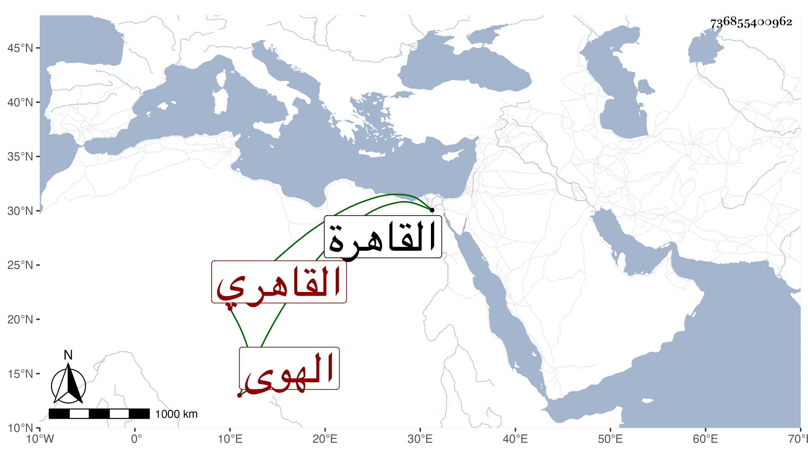

0902Sakhawi.DawLamic.ITO20230111-ara1.EIS1600.736855400962
Biography ID: 736855400962
9
محمد بن محمد بن محمد بن النعمان بن هبة الله كريم الدين الهوى ثم القاهري قال شيخنا في إنبائه : اشتغل قليلا وولي حسبة بلده ثم تزيا للجند وولي شدها فظلم وعسف ثم قدم القاهرة وتقدم عند الناصر بالتمسخر فولاه الحسبة مرارا أولها في جمادى الآخرة سنة خمس ونادمه . مات في شعبان سنة ثلاث عشرة ويقال أنه هو المشير على السلطان بمنع الوارث من ميراثه ولو كان ولدا بل يؤخذ للديوان فعوملت تركته بذلك .
